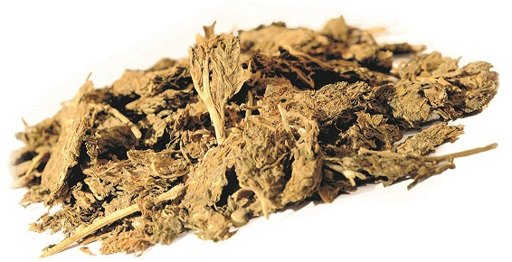
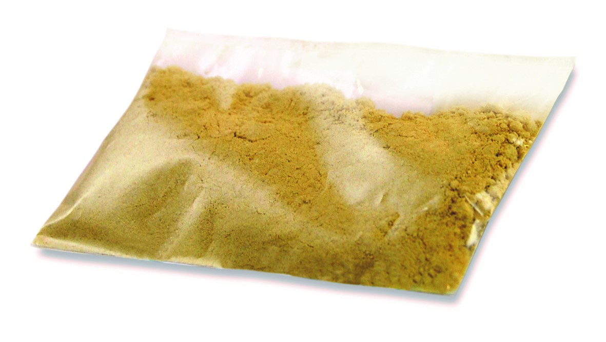
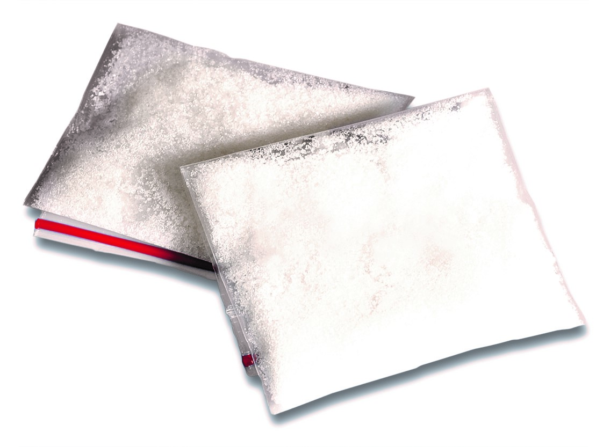
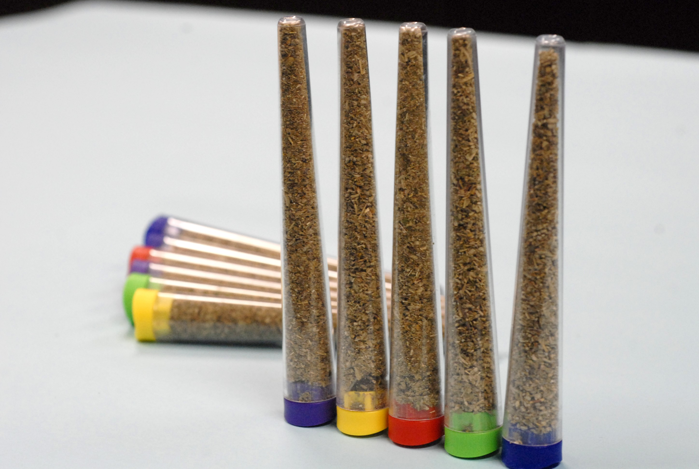
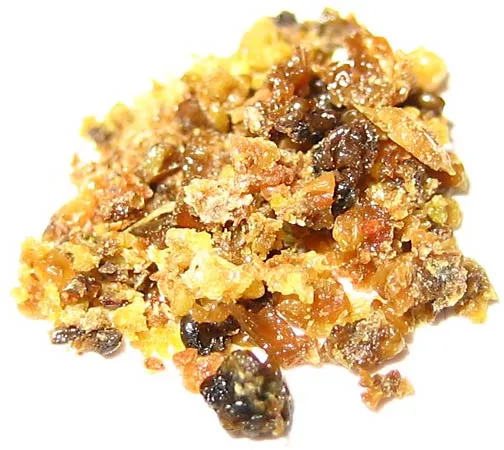
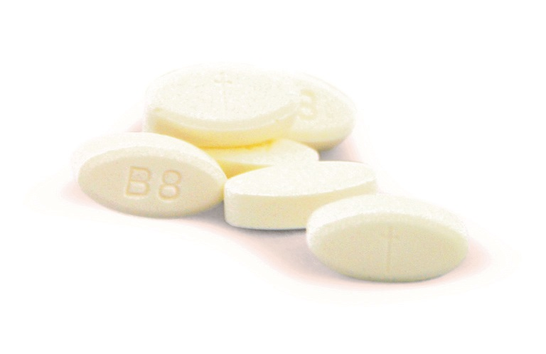
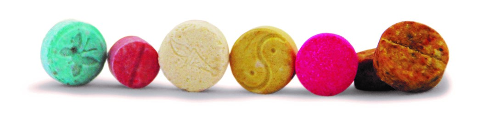
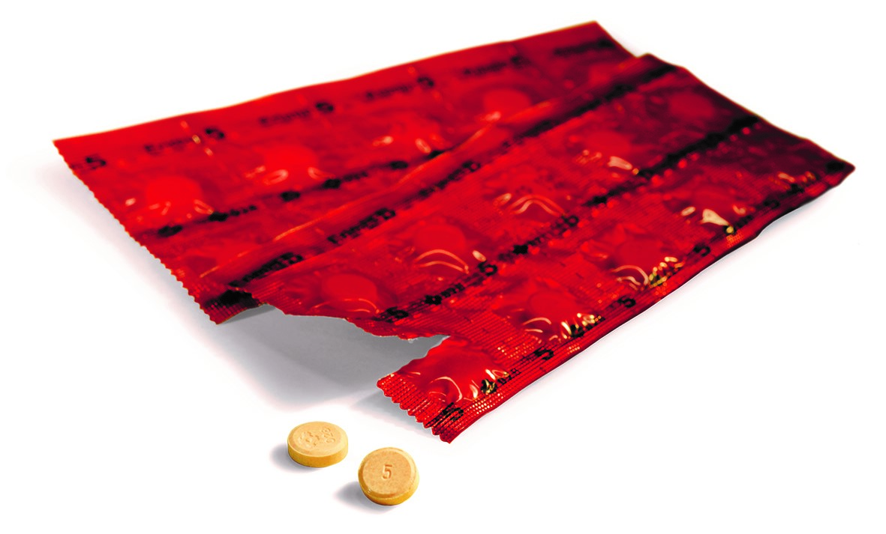

Popular Drug Types
Overview of Popular Drug Types in Singapore
While there might be a myriad of undocumented drug types being abused in Singapore, the more popular ones can be deduced by looking at the more common ones being seized by the Central Narcotics Bureau (CNB) over the years1 that are displayed here according to the different units of measurement that they were recorded in.
(Note: Interact with the graph to view the values)
Cannabis2

Also known as Marijuana, Pot, Grass, Joints, Ganja, Hashish and Weed, Cannabis come from any part of a plant of the genus Cannabis and contains THC (tetrahydrocannabinol) which affect one’s mood as well as concentration and memory which weakens the abuser’s ability to learn.
Effects of short-term use: impaired short-term memory, impaired motor co-ordination and possibility of paranoia and psychosis in high doses
Effects of long-term or heavy use: addiction, altered brain development, impaired neural connectivity in specific brain regions, cognitive impairment, symptoms of chronic bronchitis and poor education outcome
Withdrawal symptoms: anxiety, irritability, sleeping difficulties and craving for the drug
Heroin2

Also known as White, Smack, Junk, Powder, Putih, Medicine and Ubat, Heroin is a powerful and very addictive drug that comes in granular, powder or solution form. Heroin No. 4 is white in colour while Heroin No. 3 is more yellowish. Heroin abusers feel dull and tired very easily and are also not able to concentrate. “Chasing the Dragon” is a common method of abuse used by Heroin abusers here that involves heating the Heroin powder and sniffing the fumes through a rolled note.
Effects of use: lowered heart rate and respiration, damage to lungs, kidneys and liver, dull feeling and tiredness, difficulty in concentrating and constipation
Withdrawal symptoms: insomnia, watery eyes and runny nose, irritable and jittery feelings, tremors and bodily cramps, chills and sweating as well as diarrhoea and vomiting
Ice2

Also known as Methamphetamine, Glass, Crystal, Speed, Quartz, Ice Cream, Hirropon, Shabu or Syabu that usually comes in the form of a colourless and odourless crystal that resembles glass fragments or shiny blue-white “rocks” of various sizes. It is highly addictive and is a strong stimulant, with a very strong effect on the central nervous system.
Effects of use/Withdrawal symptoms: disorientation, apathy, confused exhaustion, strong psychological dependence, psychosis, depression, damage to the brain similar to Alzheimer’s disease, stroke and epilepsy, aggression and violent behaviour, anxiety, confusion, insomnia and auditory hallucinations
Physical effects of use: permanent damage to blood vessels of heart and brain, high blood pressure leading to heart attacks, strokes and death, liver, kidney and lung damage, destruction of tissues in nose if sniffed, respiratory (breathing) problems if smoked, infectious diseases and abscesses if injected, malnutrition, weight loss and severe tooth decay
Ketamine2

Also known as K, Special K, Vitamin K and Kit Kat, Ketamine is an anaesthetic for veterinary as well as human use and the drug takes the form of a white crystalline powder, liquid or tablet. As a drug of abuse in Hong Kong, the United States and Australia, it has become common at dance parties. It produces a progression of effects on the abuser, from a state of dreamy intoxication to delirium accompanied by the inability to move, feel pain or remember what has occurred under the drug’s influence. The effects of Ketamine last an hour or less but the drug can affect the senses, judgement and co-ordination for 18 to 24 hours.
Effects of use: inability to move, distorted judgement, perception, hearing, sight, touch, smell and taste, confusion and hallucinations, problems associated with the nose, gastric pains and urinary and bladder problems
Withdrawal symptoms: depression, anger and irritability, fatigue, and insomnia
(Note: Interact with the graph to view the values)
New Psychoactive Substances (NPS) 2

Also known as Spice, K2, Bath Salts, Kronic, Bromo-Dragonfly, Mushroom, Synthetic Cannabis, BZP, TFMPP and Mephedrone, new psychoactive substances (NPS) refer to substances that mimic the effects of other controlled drugs, such as cannabis, cocaine, Ecstasy, methamphetamine or heroin. NPS are produced by introducing slight modifications to the chemical structures of existing NPS and controlled drugs to create new variations that are not yet controlled.
Effects of use: severe intoxications, severe toxic reactions leading to death, paranoia, hallucinations, adverse cardiovascular problems, renal failure and seizures
Opium3

Also known as Aunti, Aunti Emma, Big O, O, Black pill, Chandu, Chinese Molasses, Dopium, Dream Gun, Fi-Do-Nie, Gee, Guma, Midnight Oil and Zero, Opium is a depressant drug derived from the opium poppy plant. It can be smoked, eaten raw or as a pill, or made into a tincture for drinking. It can also be manufactured into heroin and is a prerequisite for heroin production.
Effects of short-term use: euphoria, relaxation, analgesia, slower, shallower breathing, lower heart rate, impaired reflexes, temporary constipation and loss of appetite
Effects of long-term use: addiction, irregular periods and difficulty having children, loss of sex drive and constipation
Withdrawal symptoms: restlessness and irritability, insomnia, depression and crying, diarrhoea, sweating, restless sleep, muscle cramps, nausea and vomiting as well as fast heart rates
(Note: Interact with the graph to view the values)
Buprenorphine2

Also known as Subutex, Tec and Su Su, Buprenorphine comes in 2 mg and 8 mg pills and is a semi-synthetic opioid derivative closely related to Morphine. It is taken sublingually i.e. place under the tongue until it dissolves. Abusers also mix it with other prescription drugs and inject it for a greater high
Effects of use: sedation, light-headedness, dizziness, nausea, constipation, vomiting
Withdrawal symptoms: delirium tremens, clouding of consciousness and severe tremors or seizures, anxiety, nausea, vomiting and diarrhoea, abdominal cramps, muscle and joint pains and insomnia
Ecstasy2

Ecstasy refers to tablets containing Methylenedioxymethamphetamine (MDMA), Methylenedioxyethylamphetamine (MDEA) and/or Methylenedioxyamphetamine (MDA). These tablets come in different colours with different logos stamped on them and are often sold in discos as well as night joints. People take them to enable them to dance all night and sometimes they die from exhaustion and dehydration. Other controlled drugs such as Ketamine and Ice, and chemicals such as paracetamol and calcium carbonate are often mixed with ecstasy by abusers.
Effects of use: increased heart rate and blood pressure, jaw clenching, teeth grinding and uncontrollable shaking, kidney, liver and brain damage and long-term memory loss, chills, sweating and vomiting, inability to think, see and co-ordinate properly and hallucinations
Withdrawal symptoms: anxiety, depression and uncontrollable fear, insomnia and loss of control of senses and reality
Erimin 52

Also known as Nimetazepam, ‘Erimin-5’ is a type of depressant taken orally by the user in tablet form to help them to calm down and sleep. Excessive use will however lead to harmful effects.
Effects of use: loss of consciousness, distorted judgement, sight and thinking, difficulty in speaking, moving and co-ordinating bodily functions as well as poor memory and concentration
Withdrawal symptoms: anxiety and jittery feelings, insomnia, nausea, vomiting, quickened heart beat, excessive sweating, violent shaking and stomach cramps, mental confusion and fits
Yaba2
A variant of Ice or Methamphetamine in tablet form, it is also known as Crazy Horse Pill. Most of the Yaba tablets found in Singapore are embossed with the ‘WY’ logo and are green or orange in colour. It is highly addictive and is a strong stimulant, with a very strong effect on the central nervous system.
Effects of use/Withdrawal symptoms: disorientation, apathy, confused exhaustion, strong psychological dependence, psychosis, depression, damage to the brain similar to Alzheimer’s disease, stroke and epilepsy, aggression and violent behaviour, anxiety, confusion, insomnia and auditory hallucinations
Physical effects of use: permanent damage to blood vessels of heart and brain, high blood pressure leading to heart attacks, strokes and death, liver, kidney and lung damage, destruction of tissues in nose if sniffed, respiratory (breathing) problems if smoked, infectious diseases and abscesses if injected, malnutrition, weight loss and severe tooth decay
Analysis & Implications of Trends of Drug Types in Singapore
While the statistics on each type of drug seized in Singapore over the years as displayed here can provide some form of a reliable illustration of the popular drug types and the demand for them, they should not be taken as fully indicative of the actual trends on the ground. For instance, some drug types could be significant yet not reflected here due to more covert operations that have thus far managed to escape surveillance and enforcement. However, due to the lack of such data, the current statistics available on drug types seized remain the most reliable form of data for analysis of their popularity.
Overall, there have been differing trends for different types of drugs from 2003 to 2021. Some have boomed in popularity, some have grown out of significance, others have remained stagnantly present. It is crucial to study the local trends surrounding these particular drugs, and their correlations with global drug trends, to be able to design more targeted and effective solutions such as in the form of aftercare programmes for abusers as well as enforcement strategies to root out and seize drug hotspots.
Drugs that have ostensibly been increasing in popularity include Cannabis, Heroin, Ice and New Psychoactive Substances (NPS).
Meanwhile, drugs that seem to have been losing or lost popularity include Heroin No.4, Opium, Buprenorphine, Erimin 5 and Yaba.
Drugs that have largely stagnated while persisting are Ketamine and Ecstasy.
Based on these deductions, the CNB could direct their strategies and resources to focus more on drugs that have been increasing in popularity as well as those that have persisted despite stagnating. While data on tendency of abuse of certain types of drugs amongst different age groups is not publicly available at the moment, the CNB could derive certain patterns from their own records to better inform its strategies of Preventive Drug Education (PDE) and Structured Rehabilitation & Aftercare Programmes.
For instance, since Ketamine is recognised as being common at dance parties2, the CNB could channel their efforts into surveillance and enforcement at places like night clubs and dance party events to seize potential drug abusers and suppliers. The rising trend of Cannabis seems to also be in line with greater attention on the substances and shifting attitudes towards it given its increasing legalisation around the world4. It is also popular as a first drug in Singapore, according to a survey conducted by the Institute of Mental Health (IMH)5. This CNA documentary examines the reasons for the growing popularity of the drug amongst youths.
1Central Narcotics Bureau. (2022). Information on Quantity of Controlled Drugs Seized. https://beta.data.gov.sg/collections/523/view
2Central Narcotics Bureau. (2023, July 13). Drug Information. https://www.cnb.gov.sg/drug-information/drugs-and-inhalants
3Alcohol and Drug Foundation. (2023, October 12). Opium. https://adf.org.au/drug-facts/opium/
4Collins, J. (2018, December 11). Why are so many countries now saying cannabis is OK? BBC. https://www.bbc.com/news/world-46374191
5Chua, N. (2023, May 4). Hooked on heroin at 12: IMH survey finds starting mean age for drug consumption in S’pore at 15.9 years. The Straits Times. https://www.straitstimes.com/singapore/hooked-on-heroin-at-12-worrying-trend-of-younger-drug-abusers